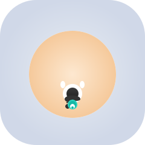
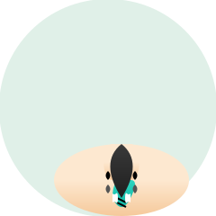
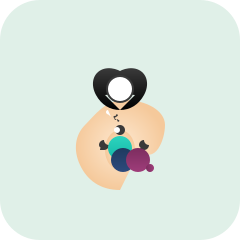
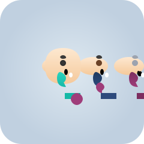
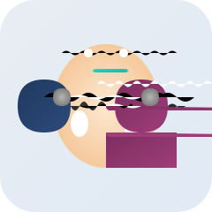
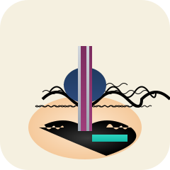
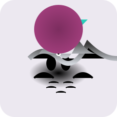
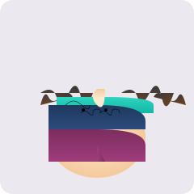

核心功能
七大模块，全周期合规
从 AI 对话到自动任务，从档案管理到申报导航——以排污许可证为锚点，覆盖企业合规全生命周期。
智能对话
Hermes 驱动的 AI 合规助手，通过自然语言对话即可查询环保法规、获取合规建议和数据分析。是整个平台的知识调度与交互中枢。
合规日历
合规义务的时间可视化工具，一次性涵盖许可证到期、执行报告、自行监测和台账记录四类合规节点。
交办整改
环保督察交办问题的全流程闭环管理，覆盖立行立改、跟踪督办、工程建设三种整改类型。
自动任务
针对钢铁行业 31 项合规工作的自动化执行与提醒引擎，按全自动/半自动/人工辅助三级分级运行。
申报平台
12 个国家级环保政务申报入口的一站式导航，按核心/金融/报告/管理/监测分类组织。
档案库
按企业生命周期（建设/运营/退役）分类管理的环境档案系统，支持法定完整度追踪和 AI 自动分类。
知识库
基于 Obsidian vault 集成的环保法规知识库，支持全文检索、标签分类和双向链接。
合规逻辑
老办法，扛不住了。
16万字、1242条的法典文本，人工研读需要数百小时；执法方式的升级，让"临时补台账"的时代彻底结束。
过错推定原则
行政处罚适用过错推定——企业需要自证无过错。没有完整、可追溯的合规记录，举证将极其被动。
三责并行
行政、民事、刑事责任并行追责。一次环境违法，可能同时触发罚款、生态损害赔偿与刑事追责。
数据造假入刑
监测数据造假可被追究刑事责任。台账、自行监测、执行报告的每一项数据都必须经得起核查。
四类追责对象
覆盖企业、法定代表人、第三方服务机构、公职人员。责任穿透到个人，合规不再是"部门的事"。
10部旧法废止
《环境保护法》等10部单行法同步废止。企业原有的制度文本、台账模板、合规清单全部需要重检。
Ready · 06
8月15日之后，
合规不再是
开卷考试。

超低排放改造完，无组织排放台账每天靠手补，检查一翻就露馅。
→ 它读完许可证直接生成台账清单，每天该记哪几项清清楚楚。
迎检前得带着五个人翻三天台账，还总怕哪个排放口漏登记。
→ 许可证导进来全厂排放口自动列齐，迎检清单半小时就能交。
三责并行后一次超标可能罚完款还要赔生态损害，决策成本翻倍。
→ 条款检索能告诉我这条排放线触不触发刑事，决策有底气。
危险废物转移联单五年回溯，纸质台账霉了一箱根本查不动。
→ 危废台账按许可证排好节点，每笔转移联单到期前提醒归档。

危废追溯一旦出事，公司罚款之外法定代表人还要被追责。
→ 条款检索直接告诉我这条危废线触不触发刑事，签字才踏实。
脱硫脱硝运行台账每天填，CEMS数据一核对总有几个对不上。
→ 按业务话问它限值和监测频次，条款编号直接给出，照着核。
碳市场履约配额算错一笔就是几百万，签字前我得自己核。
→ 条款检索告诉我配额算法的法典依据，签字前对着条款核一遍。
岸电使用要记录每次靠港时长，纸质单据翻半天凑不齐。
→ 自查清单把岸电记录节点列出来，到期没填自动催。
船舶污染物接收一旦违规，公司罚款之外法定代表人也跑不掉。
→ 条款检索直接告诉我这条接收线触不触发刑事，签字才踏实。
禁养区边界我搞不清，台账上画错一个点整场都算违规。
→ 用业务话问它禁养区划定条款，原文和位置一次性给清。
粪污出了环境事件，公司罚款之外法定代表人还要赔生态损害。
→ 条款检索告诉我粪污处置的法典红线，扩产决策才有底。
突发环境事件预案每家都要核，迎检前我跑十家企业催不动。
→ 自查清单按许可证生成，哪家预案到期没更新自动催到人。
园区一次环境事件法人代表要被约谈，几十家企业责任穿透到我。
→ 条款检索告诉我园区该尽哪些法典义务，督办才有依据。
超低排放改造完，无组织排放台账每天靠手补，检查一翻就露馅。
→ 它读完许可证直接生成台账清单，每天该记哪几项清清楚楚。
迎检前得带着五个人翻三天台账，还总怕哪个排放口漏登记。
→ 许可证导进来全厂排放口自动列齐，迎检清单半小时就能交。
三责并行后一次超标可能罚完款还要赔生态损害，决策成本翻倍。
→ 条款检索能告诉我这条排放线触不触发刑事，决策有底气。
危险废物转移联单五年回溯，纸质台账霉了一箱根本查不动。
→ 危废台账按许可证排好节点，每笔转移联单到期前提醒归档。
危废追溯一旦出事，公司罚款之外法定代表人还要被追责。
→ 条款检索直接告诉我这条危废线触不触发刑事，签字才踏实。
脱硫脱硝运行台账每天填，CEMS数据一核对总有几个对不上。
→ 按业务话问它限值和监测频次，条款编号直接给出，照着核。
碳市场履约配额算错一笔就是几百万，签字前我得自己核。
→ 条款检索告诉我配额算法的法典依据，签字前对着条款核一遍。
岸电使用要记录每次靠港时长，纸质单据翻半天凑不齐。
→ 自查清单把岸电记录节点列出来，到期没填自动催。
船舶污染物接收一旦违规，公司罚款之外法定代表人也跑不掉。
→ 条款检索直接告诉我这条接收线触不触发刑事，签字才踏实。
禁养区边界我搞不清，台账上画错一个点整场都算违规。
→ 用业务话问它禁养区划定条款，原文和位置一次性给清。
粪污出了环境事件，公司罚款之外法定代表人还要赔生态损害。
→ 条款检索告诉我粪污处置的法典红线，扩产决策才有底。
突发环境事件预案每家都要核，迎检前我跑十家企业催不动。
→ 自查清单按许可证生成，哪家预案到期没更新自动催到人。
园区一次环境事件法人代表要被约谈，几十家企业责任穿透到我。
→ 条款检索告诉我园区该尽哪些法典义务，督办才有依据。
烧结脱硫脱硝运行记录要追溯三年，旧台账缺页根本对不上。
→ 许可证一导进去，排放口和限值就认好了，台账按月自动归档。
10部旧法一废止，我们这堆制度文本和台账模板全得重检。
→ 它把新旧条款差异推送到我手机，重检清单直接照着改。
VOCs治理台账每月对一遍，监测数据和药剂消耗总对不上数。
→ 许可证里污染因子一拉出来，监测频次和限值自动列好。

团队三个人盯八套台账，谁请假哪块就空，迎检一查一个准。
→ 自查清单按许可证生成，谁负责哪项到期前自动催，不用盯人。
数据造假入刑后，第三方运维给的数据我也不敢直接签。
→ 自查清单把每项数据的法典依据列出来，签字前对着核一遍。
在线监测合规是高压线，三个班次的运维记录我得挨个核。
→ 自查清单把运维记录节点列出来，到期没填自动催到人。
在线监测数据造假能追刑责，我签的每一张报表都有风险。
→ 自查清单把每项数据的法典依据列好，签字前对着核一遍。

港口扬尘废水台账分两个部门管，迎检前合并一次能熬通宵。
→ 许可证一导入排放口全列齐，扬尘废水台账按节点统一排。
岸电使用不达标既罚公司又追个人，配多少岸电设施我得拍板。
→ 条款检索告诉我岸电要求的法典依据和档位，投入才有底气。
恶臭投诉一来就要查台账，三个分场的记录凑不齐没法交。
→ 自查清单按许可证生成，三个分场谁该填什么到期前自动催。
恶臭被投诉一次，法人代表可能被约谈，品牌损失比罚款大。
→ 义务节点把投诉响应和台账节点排好，签批前对着核一遍。
10部旧法废止后园区一证式管理制度全得重编，人手根本不够。
→ 新旧法差异它替我比对好，园区制度该改哪几条直接列出来。
规划环评跟踪不到位，园区被通报法人代表也得担责。
→ 自查清单把园区该跟踪的环评节点列出来，督办照着核。
烧结脱硫脱硝运行记录要追溯三年，旧台账缺页根本对不上。
→ 许可证一导进去，排放口和限值就认好了，台账按月自动归档。
10部旧法一废止，我们这堆制度文本和台账模板全得重检。
→ 它把新旧条款差异推送到我手机，重检清单直接照着改。
VOCs治理台账每月对一遍，监测数据和药剂消耗总对不上数。
→ 许可证里污染因子一拉出来，监测频次和限值自动列好。
团队三个人盯八套台账，谁请假哪块就空，迎检一查一个准。
→ 自查清单按许可证生成，谁负责哪项到期前自动催，不用盯人。
数据造假入刑后，第三方运维给的数据我也不敢直接签。
→ 自查清单把每项数据的法典依据列出来，签字前对着核一遍。
在线监测合规是高压线，三个班次的运维记录我得挨个核。
→ 自查清单把运维记录节点列出来，到期没填自动催到人。
在线监测数据造假能追刑责，我签的每一张报表都有风险。
→ 自查清单把每项数据的法典依据列好，签字前对着核一遍。
港口扬尘废水台账分两个部门管，迎检前合并一次能熬通宵。
→ 许可证一导入排放口全列齐，扬尘废水台账按节点统一排。
岸电使用不达标既罚公司又追个人，配多少岸电设施我得拍板。
→ 条款检索告诉我岸电要求的法典依据和档位，投入才有底气。
恶臭投诉一来就要查台账，三个分场的记录凑不齐没法交。
→ 自查清单按许可证生成，三个分场谁该填什么到期前自动催。
恶臭被投诉一次，法人代表可能被约谈，品牌损失比罚款大。
→ 义务节点把投诉响应和台账节点排好，签批前对着核一遍。
10部旧法废止后园区一证式管理制度全得重编，人手根本不够。
→ 新旧法差异它替我比对好，园区制度该改哪几条直接列出来。
规划环评跟踪不到位，园区被通报法人代表也得担责。
→ 自查清单把园区该跟踪的环评节点列出来，督办照着核。

碳排放数据质量核查越来越严，燃料报表和实测对不上就完蛋。
→ 用业务话问它排放口限值，条款原文和数据口径一次对齐。
一次环境违法能同时罚企业、追法定代表人，我个人也跑不掉。
→ 法定期限全排进预警，许可证延续、执行报告到期前它先提醒。

新化学物质登记老是搞不清该报哪类，台账漏一项就是造假。
→ 按业务话问它就给出条款编号和申报流程，照着填不会漏。
10部旧法废止后制度文件全要重编，部门就俩人根本写不完。
→ 新旧法差异它替我比对好，制度该改哪几条直接列出来。
碳市场履约报表要对在线监测数据，一个数对不上就要解释。
→ 许可证一导入，排放口和监测因子对齐，报表口径不再打架。
法典一施行旧制度全得重编，安环部就四个人根本转不开。
→ 新旧法差异它替我比对，该改哪几条制度直接列出来。
船舶污染物接收台账每周对一遍，靠港记录和接收单总对不上。
→ 许可证把排放口和污染因子认好，接收台账按节点自动排。
10部旧法废止后应急程序要重编，安环部人手不够拖了俩月。
→ 新旧条款差异它推送到我，应急程序该改哪几条直接列出来。

粪污资源化利用台账每月对一遍，去向记录和量对不上就慌。
→ 许可证一导入排放口和污染因子认好，台账按节点自动排。
10部旧法废止后粪污台账模板全失效，新模板谁也没空写。
→ 新旧法差异它替我比对好，新台账模板照着它的清单改就行。

规划环评跟踪台账要追五年，几十家企业的数据凑不齐。
→ 许可证一导入园区企业排放口全列齐，跟踪台账按节点自动排。

排污一证式管理后许可证延续扎堆到期，我一个人盯不过来。
→ 义务节点把每家许可证延续日期排好，到期前自动催到我。
碳排放数据质量核查越来越严，燃料报表和实测对不上就完蛋。
→ 用业务话问它排放口限值，条款原文和数据口径一次对齐。
一次环境违法能同时罚企业、追法定代表人，我个人也跑不掉。
→ 法定期限全排进预警，许可证延续、执行报告到期前它先提醒。
新化学物质登记老是搞不清该报哪类，台账漏一项就是造假。
→ 按业务话问它就给出条款编号和申报流程，照着填不会漏。
10部旧法废止后制度文件全要重编，部门就俩人根本写不完。
→ 新旧法差异它替我比对好，制度该改哪几条直接列出来。
碳市场履约报表要对在线监测数据，一个数对不上就要解释。
→ 许可证一导入，排放口和监测因子对齐，报表口径不再打架。
法典一施行旧制度全得重编，安环部就四个人根本转不开。
→ 新旧法差异它替我比对，该改哪几条制度直接列出来。
船舶污染物接收台账每周对一遍，靠港记录和接收单总对不上。
→ 许可证把排放口和污染因子认好，接收台账按节点自动排。
10部旧法废止后应急程序要重编，安环部人手不够拖了俩月。
→ 新旧条款差异它推送到我，应急程序该改哪几条直接列出来。
粪污资源化利用台账每月对一遍，去向记录和量对不上就慌。
→ 许可证一导入排放口和污染因子认好，台账按节点自动排。
10部旧法废止后粪污台账模板全失效，新模板谁也没空写。
→ 新旧法差异它替我比对好，新台账模板照着它的清单改就行。
规划环评跟踪台账要追五年，几十家企业的数据凑不齐。
→ 许可证一导入园区企业排放口全列齐，跟踪台账按节点自动排。
排污一证式管理后许可证延续扎堆到期，我一个人盯不过来。
→ 义务节点把每家许可证延续日期排好，到期前自动催到我。
现在申请试用，让 EcoPilot 在法典施行前完成对你企业的合规画像，把 1242 条法典要求变成一张清晰的行动清单。
行业覆盖
法典对各行业，有专项条款。
EcoPilot从许可证认知行业，给出的不是通用答案。未列出你的行业？没关系——读取许可证后即可服务任意排污单位。
钢铁与建材
- •超低排放改造
- •无组织排放管控
- •碳排放数据质量
化工与医药
- •挥发性有机物治理
- •新化学物质管理
- •危险废物追溯
电力与热力
- •碳市场履约
- •在线监测合规
- •脱硫脱硝运行
港口与航运
- •船舶污染物排放
- •岸电使用要求
- •港口扬尘废水
畜禽养殖
- •粪污资源化利用
- •恶臭污染防治
- •禁养区合规
园区与制造
- •规划环评跟踪
- •突发环境事件预案
- •排污一证式管理